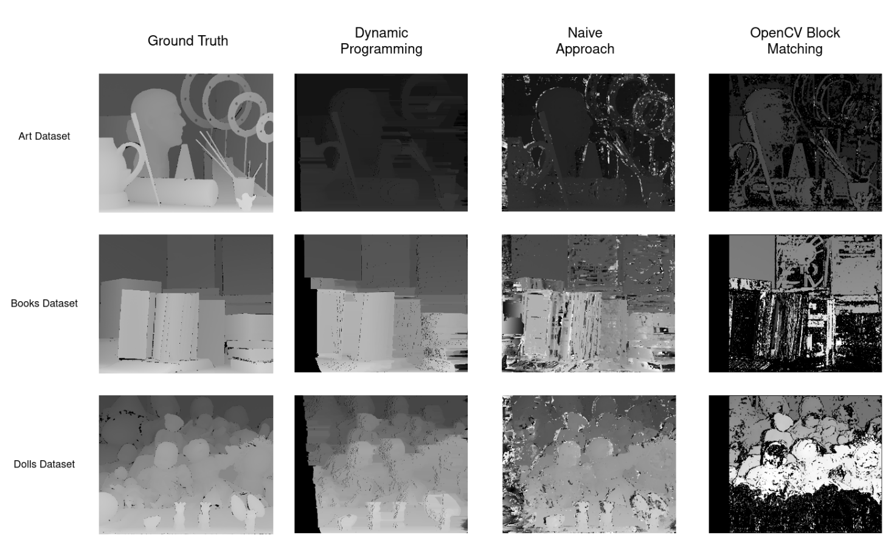

Depth Estimation: Naive and Dynamic Programming Approaches
Depth estimation from stereo images that follow the standard stereo geometry. The Middlebury Stereo Datasets were used for testing the implementation. The naive brute force mathcing approach is used for pixel correspondance and disparity computation. The result is compared to the dynamic programming approach for depth estimation. Both approaches are developed from scratch in CUDA for accelerated GPU support and compared with OpenCV built-in solutions.